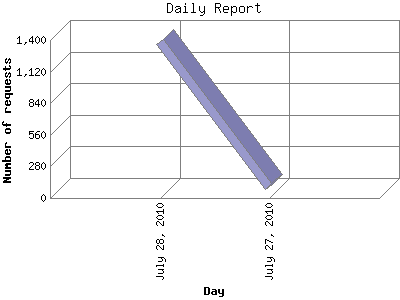

The Daily Report identifies the activity for each day within the reporting period. Remember that one page hit can result in several server requests as the images for each page are loaded.

| Day | Number of requests | Number of page requests | |
|---|---|---|---|
| 1. | July 27, 2010 | 96 | 4 |
| 2. | July 28, 2010 | 1,385 | 4 |
Most active day July 27, 2010 : 4 pages sent. 1,385 requests handled.
Daily average: 4 pages sent. 740 requests handled.
This report was generated on July 29, 2010 02:29.
Report time frame July 27, 2010 14:23 to July 28, 2010 23:30.
| Web statistics report produced by: analog 6.0 / Report Magic 2.21 |